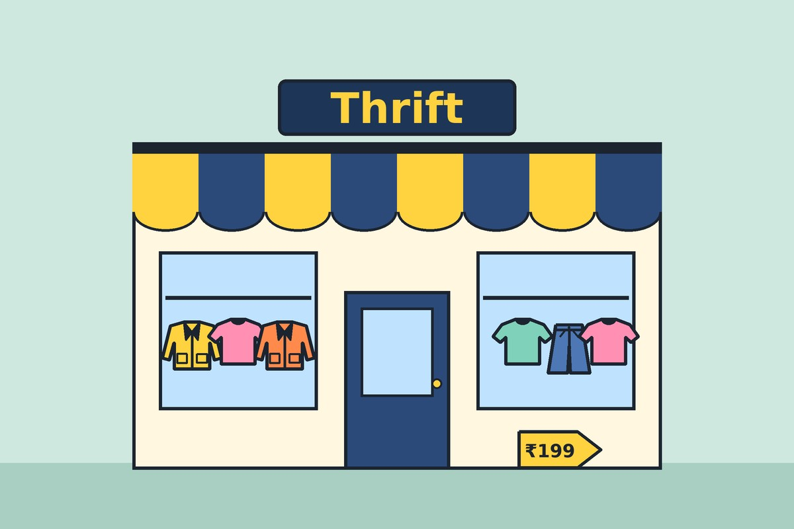
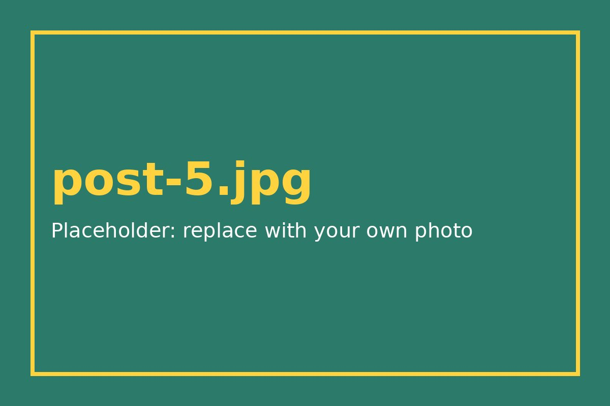
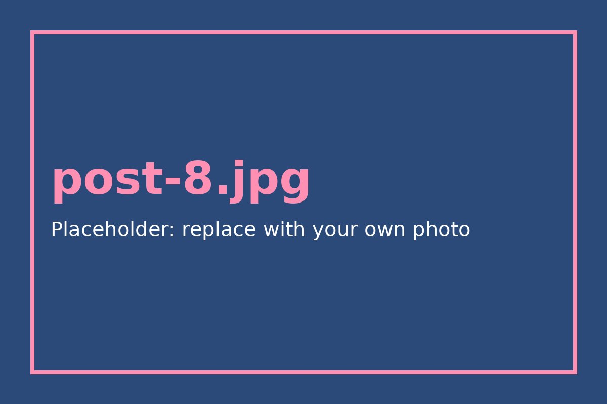
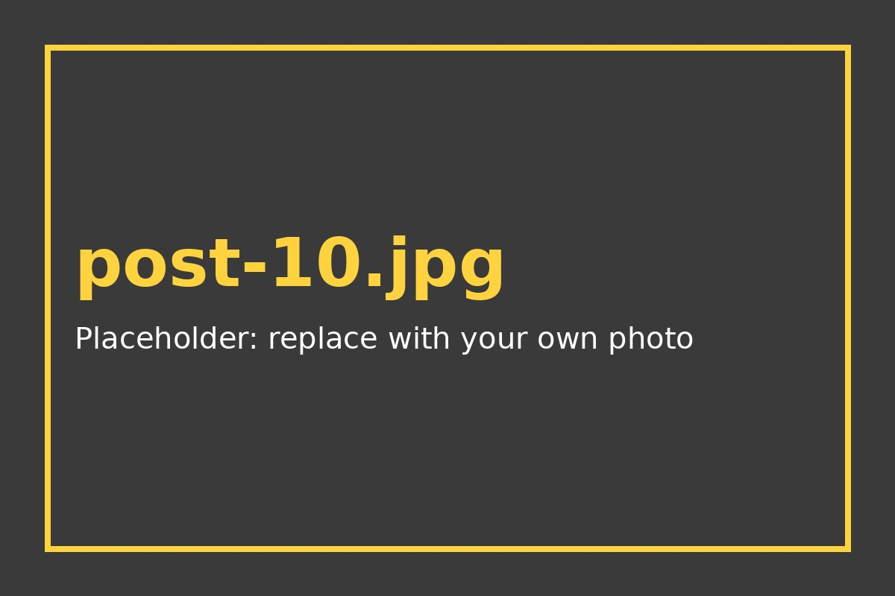

How to Thrift Like a Pro: A Beginner's Guide
Plan the trip, scan the racks fast and leave with clothes you will actually wear.
Plain, practical guides to thrifting and secondhand fashion for students and first-job budgets.
Plan the trip, scan the racks fast and leave with clothes you will actually wear.

A seven-point checklist so you do not bring home a jacket with hidden damage.

Five easy outfits that balance the volume of baggy denim.

Markets, thrift stores, Instagram pages and swaps that suit a student budget.

Safe, simple ways to freshen thrifted clothes and lift common stains.

Four beginner flips you can do with scissors, a needle and thread.
Five quick tests to tell a well-made piece from a throwaway one.

Five terms people mix up, explained in plain words.

Twelve secondhand pieces that mix into dozens of outfits on a small budget.

Sort, photograph, price and ship your old clothes without the stress.